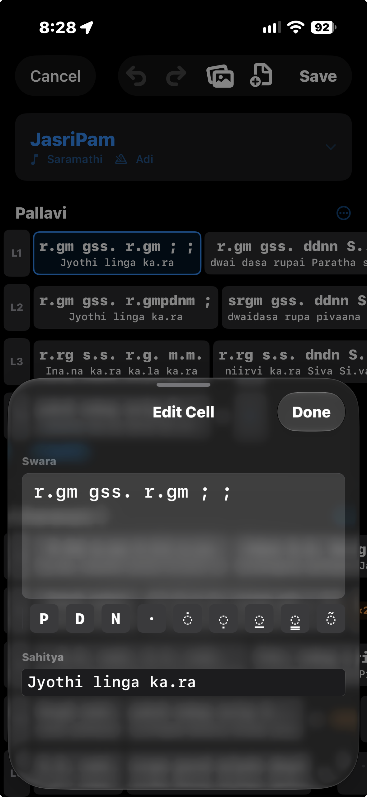
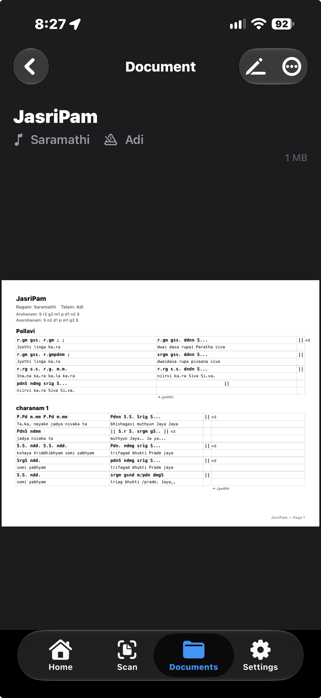
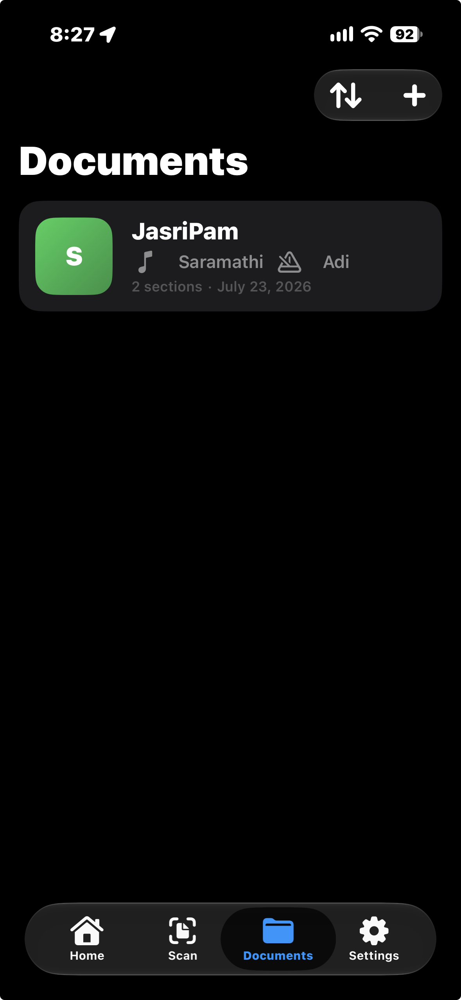

Photograph or import a Carnatic music sheet. Get an editable, exportable transcription with swaras, sahitya, ragam, talam, and sections organized for you.
Join the betaAvailable through TestFlight. Requires iOS 17 or later.
Most Carnatic notation lives on handwritten paper and photocopies. CarnaticTranslate reads those pages and turns them into something you can edit, search, and print.
Use the camera, pull a page from Photos, or import a PDF. Multi-page documents are handled in one pass — and when a single file holds more than one song, the app detects the split and lets you correct it before saving.
Transcription is a starting point, not a verdict. Tap any cell to correct the swara or the sahitya, with a dedicated key row for the notation marks that aren't on a standard keyboard. Copy, paste, and move cells to restructure a line.


Every document renders to a print-ready PDF with proportional columns, section headings, and repeat markers where they belong. Share it, print it, or export the whole document as a file that opens back up in the app.
Saved documents stay on your device by default. If you enable optional iCloud sync, your documents and page images move through your own iCloud account so you can continue on another device.

Three steps, start to finish.
Photograph the sheet or import an existing image or PDF.
An AI vision model reads the page and returns structured notation — swaras and sahitya aligned, ragam and talam identified.
Fix anything the model got wrong, then save, print, or share.
Questions, bugs, or feature requests during the beta — email razer323@hotmail.com and I'll get back to you.
Transcriptions are generated by AI and can contain errors. Always check the output against your original sheet before relying on it.